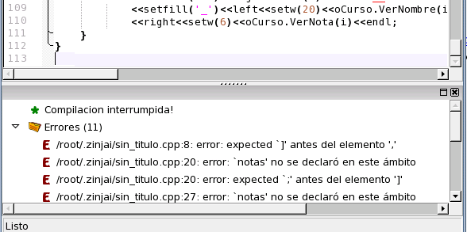

A continuación intente ejecutar el programa presionando F9. Observe que si usted no había dejado una línea en blanco al final del archivo, ZinjaI la agregará por usted antes de compilar para evitar el molesto warning "no new line at end of file". Sin embargo, el código pegado contiene una gran cantidad de errores que debe corregir.

Volver... Continuar...